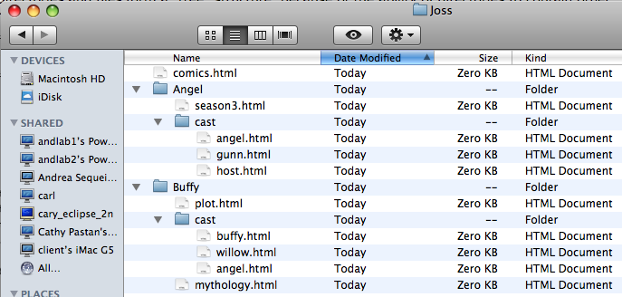

Here's how we might draw it on the board:

(Reading: We strongly suggest you read chapters 2 and 4 of Head First HTML with these notes.)
URLs are meant to specify the locations of resources in files on any computer in the world, so they can be a little complex. Fortunately, most of a URL is straightforward and familiar to you. Suppose we have a URL like:
http:// |
cs.wellesley.edu/ |
~cs110/lectures/L03-html/ |
URLs.html |
| protocol | server.domain | path | filename |
Let's break it down:
http:// This is the protocol, which is almost always
HTTP, the Hyper Text Transport Protocol. You'll also occasionally
see FTP, the File Transfer Protocol; HTTPS, the secure version of
HTTP; and others.
cs.wellesley.edu/ This is the server: a
machine connected to the internet that hands out files to anyone
who asks. cswellesley.edu~cs110/lectures/L03-html This is the
path: a sequence of directories (AKA folders), separated by
slashes, that indicates where on the server the file is located.
In this path, there's a tilde (~), which means to start at the
public_html directory under the home
directory of the cs110 account. We'll always be using
that kind of URL in this class, so keep this special rule in mind.
URLs.html This is the file that is being
requested.
Because URLs can specify files on many different kinds of computers, you should stick to a lowest common denominator when naming your directories and files, to avoid confusing machines and browsers. The lowest common denominator means:
cats and dogs.html” you're much safer
with cats-and-dogs.html or
cats_and_dogs.html Furthermore, be careful with upper and lower case. To your eyes,
cats.html and Cats.html may seem like the
same filename, but to a computer, they're as different as
cats.html and dogs.html. The same rule is true
of directory names: they are case-sensitive. Many people like to stick to
all lower-case, just so they don't have to remember. Wellesley's web
standard is that folder names start with an upper-case letter and file
names start with a lower-case letter.
Use a file transfer program (such as Fetch or WinSCP) to create a
path of directories in your CS account, and then create a simple web
page that just says “hello world” and put it in the
bottommost directory. Finally, put in a link to that “hello
world” page in little.html.
Certain parts of the end of an absolute URL can be omitted. For
example, the filename can be omitted and (usually) defaults to a file
named index.html in the specified directory. Similarly, the
path can be omitted, in which case the page is in the "top" directory of
the web server. However, the protocol and server must be
specified. You can't omit those. If a URL has a protocol, it's an
absolute URL, otherwise it'll be treated as a relative URL.
As you know, most operating systems (including Unix, Macs, and Windows),
organize the contents of a computer's hard drive into
folders, also called directories. Folders and files form
a tree
structure, because of the ability of directories to contain
other directories.
Here's an example:
For a website about Joss Whedon, we might have a folder about his Buffy the Vampire Slayer TV show, another about the TV show Angel, and a document his comics. These might all be in a top-level folder calledJoss. (The top-level folder is also called the root folder.) The folders about the TV shows might each have a sub-folder calledcast. And so on.
While it's easy to conceptualize a tree of folders and files, also called a directory tree, there are many different ways to draw it. Here are several ways of depicting the Joss directory tree described above that you will see in this course:
Here's how we might draw it on the board:
Here's how it might look on a Mac, using the finder, and
choosing the list
view (second icon on the left, in the group
of four just above the filenames).

Here's how it might look on a Windows machine, using
the Windows Explorer:

For example, we can see that "buffy.html" and "willow.html" are both
files in the same directory, the one called "cast," which is, in turn, one
of three things in the directory called "Buffy," which is in the directory
called "Joss." Joss contains two directories (Buffy and Angel) and a file
called "comics.html"; and so on. Take a minute to be sure you understand
the relationships among the directories and files. Notice that there
are two files named angel.html
; this is okay, because they
are in different directories.
We can use these relationships to form a shorthand way of specifying a URL. This is called a relative URL, because we specify the location of a file relative to a known file. Here are the basic rules:
buffy.html
linking it to willow.html, we can say:
<a href="willow.html">her best friend Willow</a>
mythology.html and we want to give a link to the file
angel.html, we can say:
<a href="cast/angel.html">Angel, the vampire with a soul</a>
upthe tree (go left on the diagram). To go up, we write
../. That's dot, dot, slash.For example, if we are in the file
host.html and we want to make a link to
season3.html, we can say:
<a href="../season3.html">the Host returned in season 3</a>That last step, with the
.. is tricky: to go up, we write
..; while to go down we have to indicate which subdirectory
we mean. In either case, we separate these up/down steps with a
slash. Here's another example: suppose we want to put a link
from buffy.html to comics.html. In this case,
we can write:
<a href="../../comics.html">another layer in the comics</a>
Create some additional directories in your CS account and practice with the relative URLs. Relative URLs will make your lives much easier when you produce different versions and when you deliver your website to your client. Try the equivalent of:
plot.htmlcomics.htmlseason3.htmlplot.htmlgunn.htmlwillow.htmlThe model above establishes a one-to-one correspondence between a URL and a file (web page) somewhere in the vast Internet. Sometimes, however, you want to address (point to) a particular location within a page. Such locations are called fragments.
While fragments can be used in many ways, one common use is to have
a table of contents
at the top of a page, allowing readers to skip
down to the particular section they are interested in. An example of
such a table of contents is at the top of these notes.
Fragments are addressed by extending the URL by adding a # character and the name or id of the fragment. Thus, we have:
http:// |
cs.wellesley.edu/ |
~cs110/lectures/L03-html/ |
URLs.html# |
relative |
| protocol | server.domain | path | filename | fragment id |
One key step is marking the destination of the URL,
by naming the fragment, just as we name a file or folder. This
is done with the ID attribute, which can be applied to
pretty much every HTML tag. We typically add it to the header tag (such
as H2) of the section we want to skip to. For example:
<h2 id="relative">Relative URLs</h2>
Given the code above, we can then point to that section from any web
page anywhere, using an absolute URL, like the one in the table above.
We can also use fragments with relative URLs. For example, to point to
that section from another file in the same directory, we can just give
the filename and the fragment name: URLs.html#relative. In
fact, if we want to point to it from within the same file, we can omit
the filename and the relative URL becomes just #relative.
You can see examples of that kind of URL in the table of contents at the
top of this page.